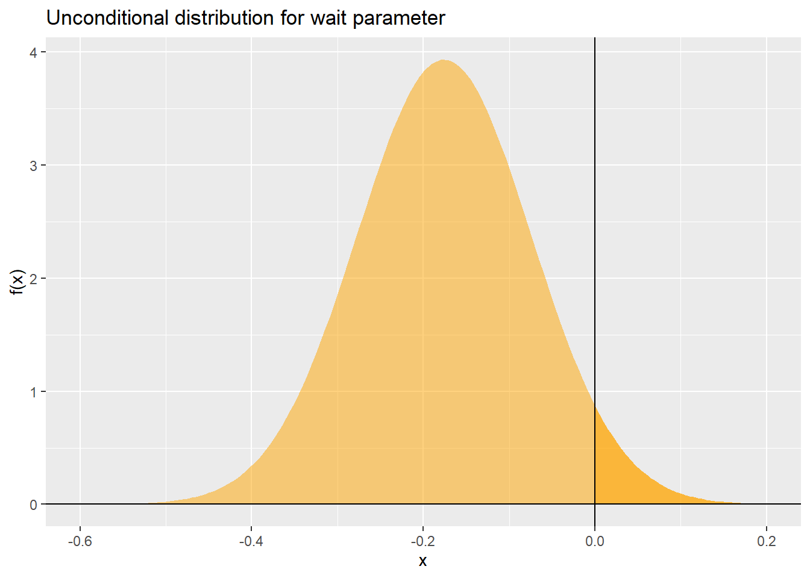
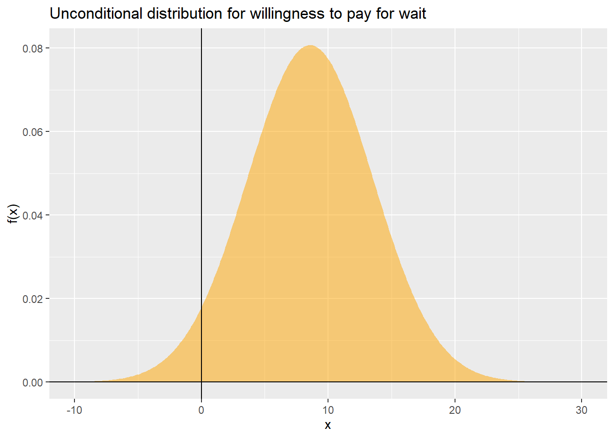
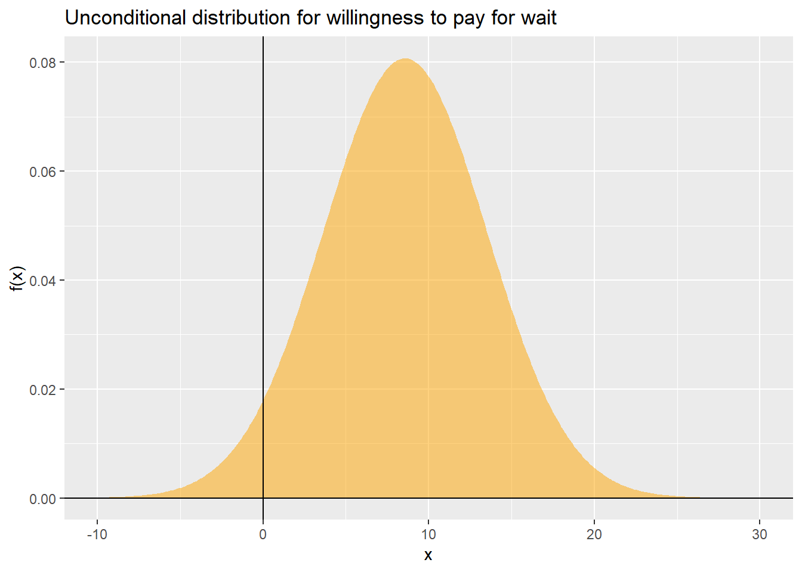
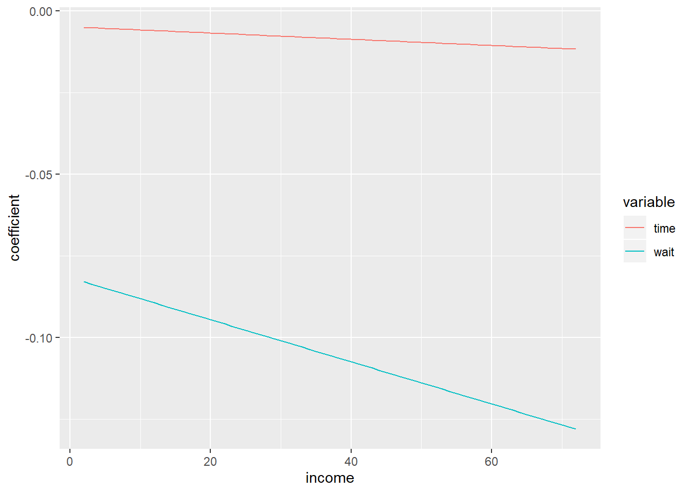
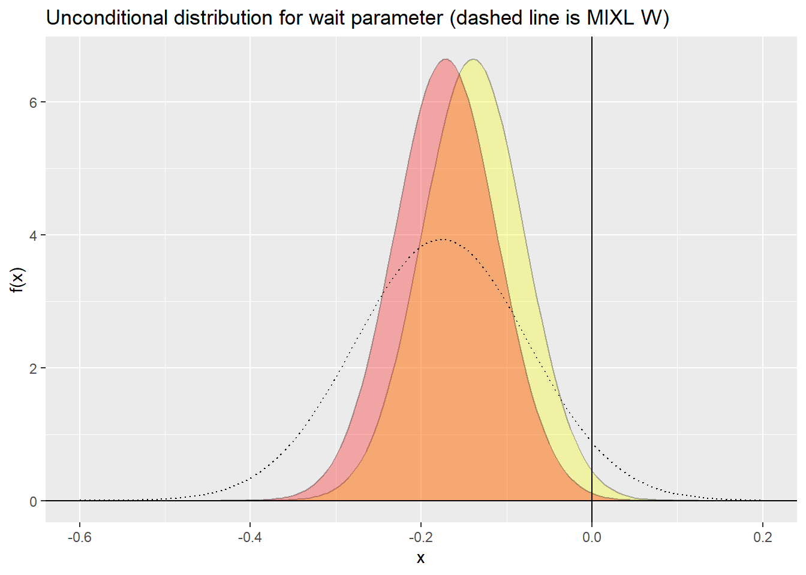
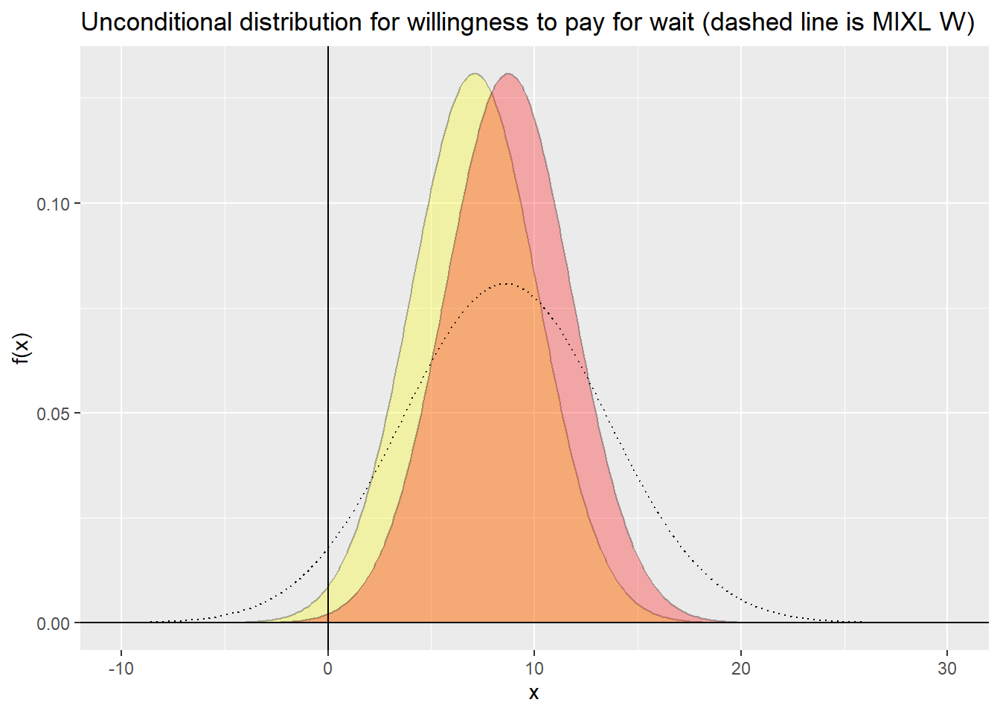

Chapter 9 Dealing with Heterogeneity I: The Mixed Logit Model
“Life produces a different taste each time you take it.”
— Frank Herbert
“Develop flexibility and you will be firm; cultivate yielding and you will be strong.”
— Liezi, The Book of Master Lie
9.1 Preliminaries
Load the packages used in this section:
## Loading required package: maxLik## Loading required package: miscTools##
## Please cite the 'maxLik' package as:
## Henningsen, Arne and Toomet, Ott (2011). maxLik: A package for maximum likelihood estimation in R. Computational Statistics 26(3), 443-458. DOI 10.1007/s00180-010-0217-1.
##
## If you have questions, suggestions, or comments regarding the 'maxLik' package, please use a forum or 'tracker' at maxLik's R-Forge site:
## https://r-forge.r-project.org/projects/maxlik/##
## Attaching package: 'gridExtra'## The following object is masked from 'package:dplyr':
##
## combine9.2 Taste variations in the population
The preceding chapters (Chapters 7 and 8) were concerned with the IIA property of the logit model. As discussed there, when the specification of the model is incomplete, the presence of residual correlation can often lead to inappropriate - even nonsensical - substitution patterns. Accordingly, the GEV family of models (of which the nested logit is a member) and the multinomial probit model aimed at introducing more flexible substitution patterns. The nested logit model achieves this by inducing a hierarchical decision-making structure where alternatives within nests are correlated, whereas the multinomial probit model introduces a flexible, but technically demanding, covariance structure for multinomial choices.
In this chapter, we introduce a second important issue in the analysis of discrete choices, namely taste variation or heterogeneity.
To motivate the discussion, we will use a dataset from the AER package on the mode of transportation used by travelers traveling between Sydney and Melbourne:
This dataset is included in the AER package (Applied Econometrics with R) and is a companion to Greene’s popular econometrics textbook (Greene 2003). The dataset includes information about mode choices for individual travelers, namely travel by air, train, bus, or car. The following attributes about the alternatives are available:
- vcost: the vehicle cost component.
- travel: travel time in vehicle (in min).
- wait: waiting time(in min).
- gcost: a generalized cost measure.
The median of these attributes as well as the proportion of choices by mode are summarized in the following table:
Proportion <- TravelMode %>%
filter(choice == "yes") %>%
select(mode) %>%
group_by(mode) %>%
summarise(no_rows = length(mode))
df <- data.frame(Mode = c("air", "train", "bus", "car"),
vcost = c(median(filter(TravelMode, mode == "air")$vcost),
median(filter(TravelMode, mode == "train")$vcost),
median(filter(TravelMode, mode == "bus")$vcost),
median(filter(TravelMode, mode == "car")$vcost)),
wait = c(median(filter(TravelMode, mode == "air")$wait),
median(filter(TravelMode, mode == "train")$wait),
median(filter(TravelMode, mode == "bus")$wait),
median(filter(TravelMode, mode == "car")$wait)),
travel = c(median(filter(TravelMode, mode == "air")$gcost),
median(filter(TravelMode, mode == "train")$gcost),
median(filter(TravelMode, mode == "bus")$gcost),
median(filter(TravelMode, mode == "car")$gcost)),
Proportion = Proportion$no_rows/(nrow(TravelMode)/4)
)
df %>%
kable(digits = 3) %>%
kable_styling()| Mode | vcost | wait | travel | Proportion |
|---|---|---|---|---|
| air | 81 | 64 | 100.0 | 0.276 |
| train | 42 | 34 | 135.0 | 0.300 |
| bus | 32 | 35 | 108.0 | 0.143 |
| car | 16 | 0 | 94.5 | 0.281 |
In addition, there are two individual-level attributes, the income of the traveler (in 10,000s) and the size of the traveling party (number of people in party).
The dataset is in “long” form, which means that there is one record per decision-making situation per decision-maker. Here, we format the dataframe in preparation for use with the packages mlogit and gmnl:
TM <- mlogit.data(TravelMode, choice = "choice", shape = "long",
alt.levels = c("air", "train", "bus", "car"))We then begin by estimating multinomial logit, nested logit, and multinomial probit models for the sample dataset. The code for estimating each of these models is as follows:
library(mlogit)
#Multinomial logit
mnl0 <- mlogit(choice ~ vcost + travel + wait | 1,
data = TM)
#summary(mnl0)
#Nested logit:
nl <- mlogit(choice ~ vcost + travel + wait | 1,
data = TM,
nests = list(land = c( "car", "bus", "train"), air = c("air")),
un.nest.el = TRUE)
#summary(nl)
#Multinomial probit:
prbt <- mlogit(choice ~ vcost + travel + wait | 1,
data = TM,
probit = TRUE)
#summary(prbt)
Figure 9.1: Nests in the nested logit model
The results of these models are summarized in Table ((???)) below.
# Estimate a constants only model to calculate McFadden's _adjusted_ rho2
mnl_null <- mlogit(choice ~ 1,
data = TM)
mnl0.summary <- rownames_to_column(data.frame(summary(mnl0)$CoefTable), "Variable") %>%
transmute(Variable, Estimate, pval = `Pr...z..`)
nl.summary <- rownames_to_column(data.frame(summary(nl)$CoefTable), "Variable") %>%
transmute(Variable, Estimate, pval = `Pr...z..`)
prbt.summary <- rownames_to_column(data.frame(summary(prbt)$CoefTable), "Variable") %>%
transmute(Variable, Estimate, pval = `Pr...z..`)
df_logit <- full_join(mnl0.summary, nl.summary, by = "Variable") %>%
full_join(prbt.summary, by = "Variable")
kable(df_logit,
"html",
digits = 4,
col.names = c("Variable",
"Estimate",
"p-value",
"Estimate",
"p-value",
"Estimate",
"p-value"),
caption = "Base models: multinomial logit (MNL), nested logit (NL), multinomial probit (MNP)") %>%
kable_styling() %>%
add_header_above(c(" " = 1, "MNL" = 2, "NL" = 2, "MNP" = 2)) %>%
footnote(general = c(paste0("Log-Likelihood: MNL = ", round(mnl0$logLik[1], digits = 3),
"; NL = ", round(nl$logLik[1], digits = 3),
"; MNP = ", round(prbt$logLik[1], digits = 3)),
paste0("McFadden Adjusted R^2: MNL = ", round(1 - (mnl0$logLik[1] - nrow(mnl0.summary)) / mnl_null$logLik[1], digits = 3),
"; NL = ", round(1 - (nl$logLik[1] - nrow(nl.summary)) / mnl_null$logLik[1], digits = 3),
"; MNP = ", round(1 - (prbt$logLik[1] - nrow(prbt.summary)) / mnl_null$logLik[1], digits = 3))))| Variable | Estimate | p-value | Estimate | p-value | Estimate | p-value |
|---|---|---|---|---|---|---|
| train:(intercept) | -0.7867 | 0.1917 | 0.5679 | 0.1106 | 0.3759 | 0.1614 |
| bus:(intercept) | -1.4336 | 0.0352 | 0.1988 | 0.6538 | 0.2616 | 0.2837 |
| car:(intercept) | -4.7399 | 0.0000 | -1.8571 | 0.0084 | -0.7027 | 0.0454 |
| vcost | -0.0139 | 0.0365 | -0.0106 | 0.0227 | -0.0070 | 0.0090 |
| travel | -0.0040 | 0.0000 | -0.0036 | 0.0000 | -0.0018 | 0.0015 |
| wait | -0.0969 | 0.0000 | -0.0554 | 0.0000 | -0.0222 | 0.0000 |
| iv | NA | NA | 0.4655 | 0.0000 | NA | NA |
| train.bus | NA | NA | NA | NA | 0.8199 | 0.0001 |
| train.car | NA | NA | NA | NA | 0.8734 | 0.0000 |
| bus.bus | NA | NA | NA | NA | 0.3296 | 0.1037 |
| bus.car | NA | NA | NA | NA | 0.2652 | 0.3918 |
| car.car | NA | NA | NA | NA | 0.3895 | 0.0168 |
| Note: | ||||||
| Log-Likelihood: MNL = -192.889; NL = -187.029; MNP = -192.562 | ||||||
| McFadden Adjusted R^2: MNL = 0.299; NL = 0.316; MNP = 0.283 |
The nested logit model and the multinomial probit model, as discussed in the preceding chapters, accommodate correlations among alternatives. For instance, the inclusive value of the nested logit is in the \(0<iv<1\) range, and it is significantly different from 1 (recall that when close to one, the model collapses to the multinomial logit model). The z-score to test whether it is different from one is:
## iv
## -5.370013The multinomial probit model also has covariance components that are significant, although, as discussed before, it is not straightforward to interpret them.
Based on the results of the models we can obtain some behavioral insights. For instance, we know that the ratio of two coefficients represents the willingness to pay. If we use the coefficients of the multinomial logit model in the example, we can see that the willingness to pay is 0.29 dollars per minute of travel time saved and 6.97 dollars per minute of waiting time saved: \[ \begin{array}{c} -\frac{\partial \text{vcost}}{\partial \text{travel}} = \frac{\beta_{travel}}{\beta_{vcost}} = \frac{-0.004}{-0.0139} \simeq 0.29 \\ \\ -\frac{\partial \text{vcost}}{\partial \text{wait}} = \frac{\beta_{wait}}{\beta_{vcost}} = \frac{-0.0969}{-0.0139} \simeq 6.97 \end{array} \] From this, we can see that travelers dislike waiting time more than travel time, and would be willing to pay more on a per-minute basis to reduce waiting time than travel time.
A question that remains outstanding with these models is whether there are taste variations in the population. For instance, we might wonder whether all decision-makers dislike travel time (or waiting time) identically, or whether there is heterogeneity (i.e., variability) in the way they respond to these attributes of the alternatives. Are younger people more impatient and value more highly their time? Are older people less patient? Or more affluent travelers, they might have a higher value of time.
A straightforward way to answer these questions would be to incorporate covariates for the individual attributes that we think are useful/relevant to explain variations in taste. But, as with the unexplained correlations that contradict proportional substitution patterns, in empirical applications it is also possible that unexplained heterogeneity remains even after introducing available covariates.
The objective of this chapter is to introduce a method, based on the logit model, to account for unobserved heterogeneity. The model is variously called mixed logit, kernel logit, and logit with error components or random coefficients. These labels result from the way in which a mix of distributions are used in the model to produce either error components or random coefficients. These distributions wrap around the kernel of a multinomial logit model. Technically, the multinomial probit model can deal with the issue of variations in taste, but as we have seen, this is technically quite demanding and the interpretation of the results is complicated too. The mixed logit presents similar computational challenges as the multinomial probit, since the distributions for the mixture require numerical integration. On the other hand, the results are often easier to interpret from a behavioral standpoint.
9.3 How to use this note
Remember that the source for the document you are reading is an R Notebook. Throughout the notes, you will find examples of code in segments of text called chunks. This is an example of a chunk:
## [1] "A piece of advice: never punch a shark in the mouth"If you are working with the Notebook version of the document, you can run the code by clicking the ‘play’ icon on the top right corner of the chunk. If you are reading the web-book version of the document, you will often see that the code has already been executed. You can still try it by copying and pasting into your R or RStudio console.
9.4 Learning objectives
In this practice, you will learn about:
- Taste heterogeneity.
- Random coefficients.
- The mixed logit model.
- Behavioral insights from random coefficients.
9.5 Suggested readings
- Ben-Akiva, M. Lerman, (1985) Discrete Choice Analysis: Theory and Applications to Travel Demand, Chapter 5, pp. 124-125, MIT Press.
- Hensher, D.A., Rose, J.M., Greene, W.H (2005) Applied Choice Analysis: A Primer, Chapters 15 and 16, Cambridge University Press.
- Louviere, J.J., Hensher, D.A., Swait, J.D. (2000) Stated Choice Methods: Analysis and Application, Chapter 6, pp. 199-205, Cambridge University Press.
- Ortuzar JD, Willumsen LG (2011) Modelling Transport, Fourth Edition, Chapter 7, pp. 250-256, John Wiley and Sons.
- Train (2009) Discrete Choice Methods with Simulation, Second Edition, Chapter 6 and Chapter 11, Cambridge University Press.
9.6 Mixed logit
To introduce the mixed logit model, we will begin with a simple situation with two alternatives - say, do nothing (\(DN\)) and buy a new phone (\(NP\)). One way to investigate taste variations in the population is to allow each decision-maker to have their own coefficient for at least some variables. This is illustrated by means of the following utility functions (notice that the utilities have alternative-level attributes only): \[ \begin{array}{ll} U_{i,DN} =& \theta_{DN} &+ \alpha_{ic}\text{cost}_{DN} + \alpha_{is}\text{speed}_{DN} &+ \mu_{id} \text{duration}_{DN} + \mu_{it} \text{time}_{DN} &+ \epsilon_{i,DN}\\ U_{i,NP} =& &+\alpha_{ic}\text{cost}_{NP} + \alpha_{is}\text{speed}_{NP}& + \mu_{id} \text{duration}_{NP} + \mu_{it} \text{time}_{NP} &+ \epsilon_{i,NP}\\ \end{array} \]
As seen above, the coefficients are specific to decision-maker \(i\). Clearly, estimating a coefficient for each decision-maker is not possible due to the incidental parameter problem: the number of parameters approaches the size of the sample. What we can do, instead, is to define the parameters in some parsimonious way that requires fewer than \(N\) coefficients (i.e., the number of decision-makers in the sample).
To do this, suppose that we select some coefficients for expansion in the following manner: \[ \begin{array}{ll} \alpha_{ic}=a_c + \eta_{ic}\\ \alpha_{is}=a_s + \eta_{is} \end{array} \]
where the terms \(a_c\) and \(a_s\) are fixed coefficients, and the terms \(\eta_{ic}\) and \(\eta_{is}\) are random terms drawn from, say, a bivariate random normal distribution:
\[ \eta \sim N(0,\Sigma_{\eta}) \]
The parameters are now specific to the decision-maker, and depend on only a small number of parameters, i.e., \(a_c\), \(a_s\), and the parameters used to specify covariance matrix \(\Sigma\), which in the case of two alternatives involves at most three parameters, since:
\[ \Sigma_{\eta} = \begin{bmatrix} \sigma_{\eta,cc} & \sigma_{\eta,sc} \\ \sigma_{\eta,cs} & \sigma_{\eta,ss} \end{bmatrix} \]
Next, suppose that the terms \(\mu_{id}\) and \(\mu_{it}\) are random terms drawn from, say again, a bivariate random normal distribution: \[ \mu \sim N(0,\Sigma_{\mu}) \] with: \[ \Sigma_{\mu} = \begin{bmatrix} \sigma_{\mu,dd} & \sigma_{\mu,td} \\ \sigma_{\mu,dt} & \sigma_{\mu,tt} \end{bmatrix} \]
Finally, assume that the terms \(\epsilon\) follow the Extreme Value Type I distribution.
There are a few situations that can be derived from this setup as follows.
First, imposing the largest number of restrictions to the parameters, we have \(\eta_{ic}=\eta_{is}=\mu_{id}=\mu_{it}=0\). It follows then that the utility functions become: \[ \begin{array}{ll} U_{i,DN} =& \theta_{DN} &+ a_{c}\text{cost}_{DN} + a_{s}\text{speed}_{DN} &+ \epsilon_{i,DN}\\ U_{i,NP} =& &+a_{c}\text{cost}_{NP} + a_{s}\text{speed}_{NP}& + \epsilon_{i,NP}\\ \end{array} \] and clearly the model collapses into the logit model.
Next, we could restrict some of the parameters, say \(\mu_{id}=\mu_{it}=0\), the the utility functions are: \[ \begin{array}{ll} U_{i,DN} =& \theta_{DN} &+ \alpha_{ic}\text{cost}_{DN} + \alpha_{is}\text{speed}_{DN} &+ \epsilon_{i,DN}\\ U_{i,NP} =& &+\alpha_{ic}\text{cost}_{NP} + \alpha_{is}\text{speed}_{NP} &+ \epsilon_{i,NP}\\ \end{array} \] This is called a model with random coefficients.
Alternatively, we could restrict parameters so that \(\eta_{ic}=\eta_{is}=0\), in which case the utility functions become: \[ \begin{array}{ll} U_{i,DN} =& \theta_{DN} &+ a_{c}\text{cost}_{DN} + a_{s}\text{speed}_{DN} &+ \mu_{id} \text{duration}_{DN} + \mu_{it} \text{time}_{DN} &+ \epsilon_{i,DN}\\ U_{i,NP} =& &+a_{c}\text{cost}_{NP} + a_{s}\text{speed}_{NP}& + \mu_{id} \text{duration}_{NP} + \mu_{it} \text{time}_{NP} &+ \epsilon_{i,NP}\\ \end{array} \] The result is the error components model.
In fact, the error components and the random coefficients are equivalent depending on whether \(a_c=a_s=0\) or conversely, whether constants are added to the error components.
More generally, we can express the utility of alternative \(j\) for decision-maker \(i\) as follows: \[ U_{ij}=\theta'w_{ij} + \alpha_i'x_{ij} + \mu'_iz_{ij}+\epsilon_{ij} \] where \(\theta\) is a vector of fixed parameters associated with attributes \(w_{ij}\), \(\alpha_i\) is a vector of random coefficients associated with attributes \(x_{ij}\), and \(\mu_i\) is a vector of error components associated with attributes \(z_{ij}\). As we saw above, there are several ways of specifying the coefficients to give error components or random coefficients. These terms, in turn, depend on the parsimonious use of random distributions. For simplicity, then, lets say that the utility is written as follows: \[ U_{ij}=\beta_i'x_{ij} + \epsilon_{ij} = \beta(\sigma)'x_{ij} + \epsilon_{ij} = V_{ij} + \epsilon_{ij} \] where \(\sigma\) is the collection of parameters that define the distributions used in the specification of the utility function. This means that, following the usual approach, we can obtain the following model for the probability of choosing alternative \(j\): \[ P_j=\frac{e^{V_{ij}}}{\sum_k e^{V_{ik}}} = \frac{e^{\beta_i'x_{ij}}}{\sum_k e^{\beta_i'x_{ik}}} = \frac{e^{\beta(\sigma)'x_{ij}}}{\sum_k e^{\beta(\sigma)'x_{ik}}} \]
Clearly, when there are no random coefficients or error terms, \(\beta(\sigma)=\beta\), which is simply a set of fixed coefficients, and the model is simply the multinomial logit, which can be estimated using the usual approach.
On the other hand, when we add mixtures of distributions to obtain the mixed logit (with random coefficients and/or error components), we typically do not know a priori the parameters of the distributions, and therefore the probability needs to be calculated as a weighted average of the possible values of \(\beta_i\): \[ P_j = \int\frac{e^{\beta_i'x_{ij}}}{\sum_k e^{\beta_i'x_{ik}}} \phi(\beta|\sigma)d\beta = \int \frac{e^{\beta(\sigma)'x_{ij}}}{\sum_k e^{\beta(\sigma)'x_{ik}}}\phi(\beta|\sigma)d\beta \] where the integral provides the weighted average given a mixing distribution \(\phi\).
A consequence of mixing distributions is that despite the mixed logit, despite having a logit kernel, does not display proportional substitution. To see this, recall that the odds-ratio of the multinomial logit model was: \[ \frac{P_j}{P_m}=\frac{\frac{e^{V_{ij}}}{\sum_k e^{V_{ik}}}}{\frac{e^{V_{im}}}{\sum_k e^{V_{ik}}}} = \frac{e^{V_{ij}}}{e^{V_{im}}} \] The above is the independence of irrelevant alternatives property: the odds-ratio of a given pair of alternatives does not dependend on the utilities/attributes of any other alternatives.
However, in the case of the mixed logit, the denominators of the probabilities are inside the integral and do not cancel each other: \[ \frac{P_j}{P_m}=\frac{\int\frac{e^{V_{ij}}}{\sum_k e^{V_{ik}}}\phi(\beta|\sigma)d\beta}{\int\frac{e^{V_{im}}}{\sum_k e^{V_{ik}}}\phi(\beta|\sigma)d\beta} \] As a consequence, the odds-ratio depends on all alternatives, and not only alternatives \(j\) and \(m\).
9.7 Estimation
Very much like the multinomial probit model, estimation of the mixed logit model is based on simulation techniques, more concretely Simulated Maximum Likelihood.
9.8 Practical example
For a practical example, we estimate three mixed logit models using the variables vcost (vehicle cost), travel (travel time in min), and wait (waiting time in minutes). The difference between the models is which variables have random coefficients. The models are as follows:
Model 1 (MIXL T), a model with a random coefficient for travel time: \[ \begin{array}{lll} V_{i,air} &= & + \beta_{vcost}vcost_{air} + \beta_{wait}wait_{air} + \beta_{i,travel}travel_{air}\\ V_{i,train} &=\beta_{train} & + \beta_{vcost}vcost_{train} + \beta_{wait}wait_{train} + \beta_{i,travel}travel_{train}\\ V_{i,bus} &=\beta_{bus} &+ \beta_{vcost}vcost_{bus}+\beta_{wait}wait_{bus}+\beta_{i,travel}travel_{bus}\\ V_{i,car} &=\beta_{car} &+ \beta_{vcost}vcost_{bus}+\beta_{wait}wait_{bus}+\beta_{i,travel}travel_{bus} \end{array} \] Model 2 (MIXL W), a model with a random coefficient for wait time: \[ \begin{array}{lll} V_{i,air} &= & + \beta_{vcost}vcost_{air} + \beta_{i,wait}wait_{air} + \beta_{travel}travel_{air}\\ V_{i,train} &=\beta_{train} & + \beta_{vcost}vcost_{train} + \beta_{i,wait}wait_{train} + \beta_{travel}travel_{train}\\ V_{i,bus} &=\beta_{bus} &+ \beta_{vcost}vcost_{bus}+\beta_{i,wait}wait_{bus}+\beta_{travel}travel_{bus}\\ V_{i,car} &=\beta_{car} &+ \beta_{vcost}vcost_{car}+\beta_{i,wait}wait_{car}+\beta_{travel}travel_{car} \end{array} \]
And Model 2 (MIXL W), a model with random coefficients for both travel and wait time: \[ \begin{array}{lll} V_{i,air} &= & + \beta_{vcost}vcost_{air} + \beta_{i,wait}wait_{air} + \beta_{i,travel}travel_{air}\\ V_{i,train} &=\beta_{train} & + \beta_{vcost}vcost_{train} + \beta_{i,wait}wait_{train} + \beta_{i,travel}travel_{train}\\ V_{i,bus} &=\beta_{bus} &+ \beta_{vcost}vcost_{bus}+\beta_{i,wait}wait_{bus}+\beta_{i,travel}travel_{bus}\\ V_{i,car} &=\beta_{car} &+ \beta_{vcost}vcost_{car}+\beta_{i,wait}wait_{car}+\beta_{i,travel}travel_{car} \end{array} \]
The random coefficients are defined in the following manner, with the random components \(\eta\) based on the normal distributions: \[ \begin{array}{l} \beta_{i,travel} = b_{travel} + \eta_{i,travel}\\ \text{and}\\ \beta_{i,wait} = b_{wait} + \eta_{i,wait}\\ \end{array} \]
The code to estimate the models is as follows:
# MIXL T
mixl_t <- gmnl(choice ~ vcost + travel + wait | 1,
data = TM, model = "mixl", ranp = c(travel = "n"), R = 50)## Estimating MIXL model## [1] "successful convergence "#summary(mixl_t)
# MIXL W
mixl_w <- gmnl(choice ~ vcost + travel + wait | 1,
data = TM, model = "mixl", ranp = c(wait = "n"), R = 50)## Estimating MIXL model## [1] "successful convergence "#summary(mixl)
# MIXL T&W
mixl <- gmnl(choice ~ vcost + travel + wait | 1,
data = TM,
model = "mixl",
ranp = c(travel = "n", wait = "n"),
R = 60)## Estimating MIXL model## [1] "successful convergence "The models are summarized in Table ((???)) below:
# Estimate a constants only model to calculate McFadden's _adjusted_ rho2
mixl0 <- gmnl(choice ~ 1,
data = TM,
model = "mnl")
mixl_t.summary <- rownames_to_column(data.frame(summary(mixl_t)$CoefTable), "Variable") %>%
transmute(Variable, Estimate, pval = `Pr...z..`)
mixl_w.summary <- rownames_to_column(data.frame(summary(mixl_w)$CoefTable), "Variable") %>%
transmute(Variable, Estimate, pval = `Pr...z..`)
mixl.summary <- rownames_to_column(data.frame(summary(mixl)$CoefTable), "Variable") %>%
transmute(Variable, Estimate, pval = `Pr...z..`)
mixl_table_1 <- full_join(mixl_t.summary, mixl_w.summary, by = "Variable") %>%
full_join(mixl.summary, by = "Variable")
kable(mixl_table_1,
"html",
digits = 4,
col.names = c("Variable",
"Estimate",
"p-value",
"Estimate",
"p-value",
"Estimate",
"p-value"),
caption = "Mixed logit models") %>%
kable_styling() %>%
add_header_above(c(" " = 1, "MIXL T" = 2, "MIXL W" = 2, "MIXL T&W" = 2)) %>%
footnote(general = c(paste0("Log-Likelihood: MIXL T = ", round(mixl_t$logLik$maximum, digits = 3),
"; MIXL W = ", round(mixl_w$logLik$maximum, digits = 3),
"; MIXL T&W = ", round(mixl$logLik$maximum, digits = 3)),
paste0("McFadden Adjusted R^2: MIXL T = ", round(1 - (mixl_t$logLik$maximum - nrow(mixl_t.summary)) / mixl0$logLik$maximum, digits = 3),
"; MIXL W = ", round(1 - (mixl_w$logLik$maximum - nrow(mixl_w.summary)) / mixl0$logLik$maximum, digits = 3),
"; MIXL T&W = ", round(1 - (mixl$logLik$maximum - nrow(mixl.summary)) / mixl0$logLik$maximum, digits = 3))))| Variable | Estimate | p-value | Estimate | p-value | Estimate | p-value |
|---|---|---|---|---|---|---|
| train:(intercept) | 0.3613 | 0.7206 | -0.0865 | 0.9230 | 5.2274 | 0.3990 |
| bus:(intercept) | -0.4468 | 0.6673 | -0.9021 | 0.3810 | 2.9903 | 0.5327 |
| car:(intercept) | -4.9045 | 0.0000 | -8.2200 | 0.0001 | -13.9055 | 0.0344 |
| vcost | -0.0261 | 0.0062 | -0.0205 | 0.0453 | -0.0776 | 0.1676 |
| wait | -0.1164 | 0.0000 | -0.1759 | 0.0000 | -0.3897 | 0.0806 |
| travel | -0.0081 | 0.0006 | -0.0064 | 0.0001 | -0.0300 | 0.1820 |
| sd.travel | 0.0053 | 0.0093 | NA | NA | 0.0194 | 0.2276 |
| sd.wait | NA | NA | 0.1014 | 0.0049 | 0.2199 | 0.0979 |
| Note: | ||||||
| Log-Likelihood: MIXL T = -189.105; MIXL W = -178.732; MIXL T&W = -174.898 | ||||||
| McFadden Adjusted R^2: MIXL T = 0.309; MIXL W = 0.345; MIXL T&W = 0.355 |
The standard deviation of the random coefficients in models MIXL T and MIXL W are estimated. In Model MIXL T&W, the levels of significance decline, with only a small increase in goodness-of-fit. Based on these results, the conclusion is that there is likely taste variations in waiting time, but probably not so in the case of travel time. Other coefficients have signs as expected. It can be seen that with respect to air travel, train is preferred, whereas bus and car are less preferred, other things being equal (see the alternative specific constants).
So what do we learn from this model that we could not from the standard multinomial logit model or the nested logit model?
9.9 Behavioral insights from the mixed logit model
The random coefficient of the MIXL W model was defined as follows: \[ \beta_{i,wait} = b_{wait} + \eta_{i,wait} \] with \(\eta\) normal iid (independent and identically distributed). Therefore: \[ \beta_{i,wait} \sim N(b_{wait}, \sigma^2) \]
Based on this, we can explore the variation in taste in the population.
9.9.1 Unconditional distribution of a random parameter
Given the parameters estimated above, we can plot the distribution of the random coefficient. This is done as follows:
# Define parameters for the distribution
mu <- coef(mixl_w)['wait']
sigma <- coef(mixl_w)['sd.wait']
# Create a data frame for plotting
df <- data.frame(x =seq(from = -0.6, to = 0.2, by = 0.005)) %>%
mutate(normal = dnorm(x, mean = mu, sd = sigma))
df_p <- data.frame(x =seq(from = 0, to = 0.2, by = 0.005)) %>%
mutate(normal = dnorm(x, mean = mu, sd = sigma))
# Plot
ggplot() +
geom_area(data = df, aes(x, normal), fill = "orange", alpha = 0.5) +
geom_area(data = df_p, aes(x, normal), fill = "orange", alpha = 0.5) +
#ylim(c(0, 1/(2 * L) + 0.2 * 1/(2 * L))) + # Set the limits of the y axis
geom_hline(yintercept = 0) + # Add y axis
geom_vline(xintercept = 0) + # Add x axis
ylab("f(x)") + # Label the y axis
ggtitle("Unconditional distribution for wait parameter")
As seen in the figure, the response to waiting time is heterogeneous in the population. While in general most people dislike waiting, some dislike waiting more than others. The plot also suggests that some people may in fact enjoy their wait time (notice how the distribution includes some positive values for the coefficient). We can calculate what proportion of the population has a positive response to waiting time:
## wait
## 0.04135726Accordingly, about 4.1% of the population has a positive parameter for waiting time.
As discussed above, the willingess to pay for reductions in waiting time was: \[ -\frac{\partial \text{vcost}}{\partial \text{wait}} = \frac{\beta_{wait}}{\beta_{vcost}} = \frac{-0.0969}{-0.0139} \simeq 6.97 \] or approximately 6.97 dollars per minute.
But if the response to waiting time is a random variable, what is then the distribution of the willingness to pay? To answer this question, we note that multiplying a normal random variable \(X\) by a constant \(c\) changes the mean and the standard deviation of the distribution as follows: \[ \begin{array} cE[X] = E[cX]\\ c^2Var[X] = Var[cX] \end{array} \]
Accordingly, since willingness to pay is the ratio of a random coefficient to a constant, the distribution of willingness to pay is: \[ -\frac{\partial \text{vcost}}{\partial \text{wait}} \sim N(\frac{b_{wait}}{\beta_{vcost}}, \frac{\sigma_{wait}^2}{\beta_{vcost}^2}) \]
The distribution of willingness to pay for waiting time is shown in the following figure:
# Define parameters for the distribution of willingness to pay
mu <- coef(mixl_w)['wait'] * (1 / coef(mixl_w)['vcost'])
sigma <- coef(mixl_w)['sd.wait']* sqrt((1 / coef(mixl_w)['vcost'])^2)
# Create a data frame for plotting
df <- data.frame(x =seq(from = -10, to = 30, by = 0.1)) %>%
mutate(normal = dnorm(x, mean = mu, sd = sigma))
#df_p <- data.frame(x =seq(from = 0, to = 0.2, by = 0.005)) %>%
# mutate(normal = dnorm(x, mean = mu, sd = sigma))
# Plot
ggplot() +
geom_area(data = df, aes(x, normal), fill = "orange", alpha = 0.5) +
# geom_area(data = df_p, aes(x, normal), fill = "orange", alpha = 0.5) +
#ylim(c(0, 1/(2 * L) + 0.2 * 1/(2 * L))) + # Set the limits of the y axis
geom_hline(yintercept = 0) + # Add y axis
geom_vline(xintercept = 0) + # Add x axis
ylab("f(x)") + # Label the y axis
ggtitle("Unconditional distribution for willingness to pay for wait")
It can be seen from the figure that whereas the willingness to pay for saving waiting time was estimated at approximately seven dollars per minute by the multinomial logit model, there appears to be a segment of the population willing to pay more than that value.
9.9.2 Conditional distribution of the random coefficients

9.10 Using covariates to capture variations in taste
The models above strongly suggest that there are important variations in taste in the way decision-makers respond to waiting time. However, no variables were used to characterize the decision-makers. As previously suggested, the variation might happen on a socio-economic dimension, for instance, income. In this section, we will explore whether including individual-level attributes can capture heterogeneity in decision-making, and if so, to what extent.
We will test two different models, with the specifications described below.
Multinomial logit with individual-level covariates (MNL-Covariates): \[ \begin{array}{lll} V_{i,air} &= & + \beta_{vcost}vcost_{air} + \beta_{i,wait}wait_{air} + \beta_{travel}travel_{air}\\ V_{i,train} &=\beta_{train} & + \beta_{vcost}vcost_{train} + \beta_{wait}wait_{train} + \beta_{travel}travel_{train} & + \beta_{train:income}income_i + \beta_{train:size}size_i\\ V_{i,bus} &=\beta_{bus} &+ \beta_{vcost}vcost_{bus}+\beta_{wait}wait_{bus}+\beta_{travel}travel_{bus}& + \beta_{bus:income}income_i + \beta_{bus:size}size_i\\ V_{i,car} &=\beta_{car} &+ \beta_{vcost}vcost_{car}+\beta_{wait}wait_{car}+\beta_{travel}travel_{car}& + \beta_{car:income}income_i + \beta_{car:size}size_i \end{array} \] This model is similar to the base multinomial logit model, with the addition of individual-level attributes.
Multinomial logit with deterministic expansions of coefficients (MNL-Expansion): \[ \begin{array}{lll} V_{i,air} &= & + \beta_{vcost}vcost_{air} + \beta_{i,wait}wait_{air} + \beta_{i,travel}travel_{air}\\ V_{i,train} &=\beta_{train} & + \beta_{vcost}vcost_{train} + \beta_{i,wait}wait_{train} + \beta_{i,travel}travel_{train}\\ V_{i,bus} &=\beta_{bus} &+ \beta_{vcost}vcost_{bus}+\beta_{i,wait}wait_{bus}+\beta_{i,travel}travel_{bus}\\ V_{i,car} &=\beta_{car} &+ \beta_{vcost}vcost_{car}+\beta_{i,wait}wait_{car}+\beta_{i,travel}travel_{car} \end{array} \] with expanded coefficients as follows: \[ \begin{array}{l} \beta_{i,travel} = b_{travel} + b_{travel:income}income_i + b_{travel:size}size_i\\ \text{and}\\ \beta_{i,wait} = b_{wait} + b_{wait:income}income_i \end{array} \]
To implement the expansion of the coefficients we need to add variable interactions to the table, and reformat for use in mlogit and gmnl:
TM <- mutate(TravelMode,
`wait:income` = wait * income,
`travel:income` = travel * income,
`wait:size` = wait * size,
`travel:size` = travel * size)
TM <- mlogit.data(TM, choice = "choice", shape = "long",
alt.levels = c("air", "train", "bus", "car"))The models are estimated using the following code:
mnl_cov <- mlogit(choice ~ vcost + travel + wait | income + size,
data = TM)
#summary(mnl1)
mnl_exp <- mlogit(choice ~ vcost + travel + travel:income + travel:size + wait + wait:income | 1,
data = TM)
#summary(mnl2)Summarize results mnl with covariates:
mnl_null <- mlogit(choice ~ 1,
data = TM)
mnl1.summary <- rownames_to_column(data.frame(summary(mnl_cov)$CoefTable), "Variable") %>%
transmute(Variable, Estimate, pval = `Pr...z..`)
mnl2.summary <- rownames_to_column(data.frame(summary(mnl_exp)$CoefTable), "Variable") %>%
transmute(Variable, Estimate, pval = `Pr...z..`)
df_logit_2 <- full_join(mnl1.summary, mnl2.summary, by = "Variable")
kable(df_logit_2,
"html",
digits = 4,
col.names = c("Variable",
"Estimate",
"p-value",
"Estimate",
"p-value")) %>%
kable_styling() %>%
add_header_above(c(" " = 1, "MNL - Covariates" = 2, "MNL - Expansion" = 2)) %>%
footnote(general = c(paste0("Log-Likelihood: MNL - Covariates = ", round(mnl_cov$logLik[1], digits = 3),
"; MNL - Expansion = ", round(mnl_exp$logLik[1], digits = 3)),
paste0("McFadden Adjusted R^2: MNL - Covariates = ", round(1 - (mnl_cov$logLik[1] - nrow(mnl1.summary)) / mnl_null$logLik[1], digits = 3),
"; NL = ", round(1 - (mnl_exp$logLik[1] - nrow(mnl2.summary)) / mnl_null$logLik[1], digits = 3))))| Variable | Estimate | p-value | Estimate | p-value |
|---|---|---|---|---|
| train:(intercept) | -0.4616 | 0.6288 | -0.7241 | 0.2412 |
| bus:(intercept) | -1.5305 | 0.1577 | -1.3373 | 0.0541 |
| car:(intercept) | -6.0352 | 0.0000 | -5.1305 | 0.0000 |
| vcost | -0.0087 | 0.2710 | -0.0158 | 0.0333 |
| travel | -0.0041 | 0.0000 | -0.0049 | 0.0004 |
| wait | -0.1012 | 0.0000 | -0.0817 | 0.0000 |
| train:income | -0.0667 | 0.0000 | NA | NA |
| bus:income | -0.0284 | 0.0963 | NA | NA |
| car:income | -0.0075 | 0.5710 | NA | NA |
| train:size | 1.1387 | 0.0002 | NA | NA |
| bus:size | 0.7745 | 0.0447 | NA | NA |
| car:size | 0.9224 | 0.0004 | NA | NA |
| travel:income | NA | NA | -0.0001 | 0.0004 |
| travel:size | NA | NA | 0.0020 | 0.0000 |
| wait:income | NA | NA | -0.0006 | 0.0089 |
| Note: | ||||
| Log-Likelihood: MNL - Covariates = -172.468; MNL - Expansion = -174.887 | ||||
| McFadden Adjusted R^2: MNL - Covariates = 0.35; NL = 0.352 |
Both models above suggest that there at least some heterogeneity in behavior can be attributed to the two characteristics of the decision-makers investigated (income and party size). In particular, we can see from the expanded coefficients that the disutility of travel time and waiting time is greater at higher levels of income:
# Create a data frame for plotting
df <- data.frame(income =seq(from = min(TM$income), to = max(TM$income), by = 1)) %>%
mutate(time = coef(mnl_exp)['travel'] + coef(mnl_exp)['travel:income'] * income,
wait = coef(mnl_exp)['wait'] + coef(mnl_exp)['wait:income'] * income) %>%
gather(variable, coefficient, 2:3)
# Plot
ggplot(df) +
geom_line(aes(x = income, y = coefficient, color = variable))
However, is the inclusion of these variables sufficient to capture variations in taste? What if we are missing some other relevant variable, such as age? In the following section we will revisit the specification of the models to test this idea.
9.11 Revisiting the example
We will reestimate the mixed logit models, but now after introducing the individual-level covariates as stand-alone variables and also as part of expansions. The expansion of the coefficient for waiting time includes a random component to give a random coefficient as follows: \[ \begin{array}{l} \beta_{i,travel} = b_{travel} + b_{travel:income}income_i + b_{travel:size}size_i\\ \text{and}\\ \beta_{i,wait} = b_{wait} + b_{wait:income}income_i + \eta_{i,wait} \end{array} \]
The models are estimated next:
mixl_w1 <- gmnl(choice ~ vcost + travel + wait | income + size,
data = TM, model = "mixl", ranp = c(wait = "n"), R = 50)## Estimating MIXL model#mixl_cov$logLik$message
#summary(mixl_w1)
mixl_w2 <- gmnl(choice ~ vcost + travel + travel:income + travel:size + wait + wait:income | 1,
data = TM, model = "mixl", ranp = c(wait = "n"), R = 50)## Estimating MIXL modeland the results summarized in the table below:
mixl_w1.summary <- rownames_to_column(data.frame(summary(mixl_w1)$CoefTable), "Variable") %>%
transmute(Variable, Estimate, pval = `Pr...z..`)
mixl_w2.summary <- rownames_to_column(data.frame(summary(mixl_w2)$CoefTable), "Variable") %>%
transmute(Variable, Estimate, pval = `Pr...z..`)
mixl_table_2 <- full_join(mixl_w1.summary, mixl_w2.summary, by = "Variable")
kable(mixl_table_2,
"html",
digits = 4,
col.names = c("Variable",
"Estimate",
"p-value",
"Estimate",
"p-value")) %>%
kable_styling() %>%
add_header_above(c(" " = 1, "MIXL W-1" = 2, "MIXL W-2" = 2)) %>%
footnote(general = c(paste0("Log-Likelihood: MIXL W-1 = ", round(mixl_w1$logLik$maximum, digits = 3),
"; MIXL W-2 = ", round(mixl_w1$logLik$maximum, digits = 3)),
paste0("McFadden Adjusted R^2: MIXL W-1 = ", round(1 - (mixl_w1$logLik$maximum - nrow(mixl_w1.summary)) / mixl0$logLik$maximum, digits = 3),
"; MIXL W-2 = ", round(1 - (mixl_w2$logLik$maximum - nrow(mixl_w2.summary)) / mixl0$logLik$maximum, digits = 3))))| Variable | Estimate | p-value | Estimate | p-value |
|---|---|---|---|---|
| train:(intercept) | 0.1422 | 0.9187 | -0.3663 | 0.6594 |
| bus:(intercept) | -1.1624 | 0.4455 | -1.1091 | 0.2417 |
| car:(intercept) | -8.5571 | 0.0000 | -7.2119 | 0.0000 |
| vcost | -0.0104 | 0.3230 | -0.0197 | 0.0495 |
| travel | -0.0058 | 0.0001 | -0.0065 | 0.0009 |
| train:income | -0.0741 | 0.0004 | NA | NA |
| bus:income | -0.0287 | 0.1784 | NA | NA |
| car:income | -0.0038 | 0.8757 | NA | NA |
| train:size | 1.2021 | 0.0021 | NA | NA |
| bus:size | 0.8061 | 0.0914 | NA | NA |
| car:size | 1.1972 | 0.0098 | NA | NA |
| wait | -0.1505 | 0.0000 | -0.1179 | 0.0000 |
| sd.wait | 0.0638 | 0.0029 | 0.0599 | 0.0008 |
| travel:income | NA | NA | -0.0001 | 0.0010 |
| travel:size | NA | NA | 0.0024 | 0.0002 |
| wait:income | NA | NA | -0.0011 | 0.0213 |
| Note: | ||||
| Log-Likelihood: MIXL W-1 = -163.542; MIXL W-2 = -163.542 | ||||
| McFadden Adjusted R^2: MIXL W-1 = 0.378; MIXL W-2 = 0.381 |
Given the expansion, the distribution of the random coefficient now is: \[ \beta_{i,wait} \sim N\Big(b_{wait} + b_{wait:income}income, \sigma_{wait}^2\Big) \] which means that we can calculate the distribution at different levels of income, as shown in the following figure for the first quartile (yellow) and the third quartile (red) of income. The dashed line is the distribution of willingness to pay according to model MIXL W.
# Define parameters for the distribution of willingness to pay
# Obtain quartiles
q <- quantile(TM$income, c(0, 0.25, 0.5, 0.75, 1))
# Define parameters for the distribution
mu_w <- coef(mixl_w)['wait']
sigma_w <- coef(mixl_w)['sd.wait']
# First quartile
mu_w2.1 <- coef(mixl_w2)['wait'] + coef(mixl_w2)["wait:income"] * q[2]
sigma_w2.1 <- coef(mixl_w2)['sd.wait']
# Third quartile
mu_w2.3 <- coef(mixl_w2)['wait'] + coef(mixl_w2)["wait:income"] * q[4]
sigma_w2.3 <- coef(mixl_w2)['sd.wait']
# Create a data frame for plotting
df_w <- data.frame(x =seq(from = -0.6, to = 0.2, by = 0.005)) %>%
mutate(normal = dnorm(x, mean = mu_w, sd = sigma_w))
df_w2.1 <- data.frame(x =seq(from = -0.6, to = 0.2, by = 0.005)) %>%
mutate(normal = dnorm(x, mean = mu_w2.1, sd = sigma_w2.1))
df_w2.3 <- data.frame(x =seq(from = -0.6, to = 0.2, by = 0.005)) %>%
mutate(normal = dnorm(x, mean = mu_w2.3, sd = sigma_w2.3))
# Plot
ggplot() +
geom_area(data = df_w2.1, aes(x, normal), fill = "yellow", alpha = 0.3) +
geom_line(data = df_w2.1, aes(x, normal), alpha = 0.3) +
geom_area(data = df_w2.3, aes(x, normal), fill = "red", alpha = 0.3) +
geom_line(data = df_w2.3, aes(x, normal), alpha = 0.3) +
geom_line(data = df_w, aes(x, normal), linetype = 3) +
#ylim(c(0, 1/(2 * L) + 0.2 * 1/(2 * L))) + # Set the limits of the y axis
geom_hline(yintercept = 0) + # Add y axis
geom_vline(xintercept = 0) + # Add x axis
ylab("f(x)") + # Label the y axis
ggtitle("Unconditional distribution for wait parameter (dashed line is MIXL W)")As before, we can also obtain the conditional distribution of the random component, which here is compared to the earlier model MIXL-W (without the income effect):


In a similar way, the distribution of the willingness to pay for waiting time according to model MIXL W-2 is: \[ -\frac{\partial \text{vcost}}{\partial \text{wait}} \sim N\Big(\frac{b_{wait} + b_{wait: income}income}{\beta_{vcost}}, \frac{\sigma_{wait}^2}{\beta_{vcost}^2}\Big) \] which is shown in the following figure for the first quartile (yellow) and the third quartile (red) of income. The dashed line is the distribution of willingness to pay according to model MIXL W.
# Define parameters for the distribution of willingness to pay
# Obtain quartiles
q <- quantile(TM$income, c(0, 0.25, 0.5, 0.75, 1))
# MIX W2 First quartile
mu_w2.1 <- (coef(mixl_w2)['wait'] + coef(mixl_w2)['wait:income'] * q[2]) * (1 / coef(mixl_w2)['vcost'])
sigma_w2.1 <- coef(mixl_w2)['sd.wait'] * sqrt((1 / coef(mixl_w2)['vcost'])^2)
# MIX W2 Third quartile
mu_w2.3 <- (coef(mixl_w2)['wait'] + coef(mixl_w2)['wait:income'] * q[4]) * (1 / coef(mixl_w2)['vcost'])
sigma_w2.3 <- coef(mixl_w2)['sd.wait'] * sqrt((1 / coef(mixl_w2)['vcost'])^2)
# MIX W
mu_w <- coef(mixl_w)['wait'] * (1 / coef(mixl_w)['vcost'])
sigma_w <- coef(mixl_w)['sd.wait'] * sqrt((1 / coef(mixl_w)['vcost'])^2)
# Create data frames for plotting
df_w2.1 <- data.frame(x =seq(from = -10, to = 30, by = 0.1)) %>%
mutate(normal = dnorm(x, mean = mu_w2.1, sd = sigma_w2.1))
df_w2.3 <- data.frame(x =seq(from = -10, to = 30, by = 0.1)) %>%
mutate(normal = dnorm(x, mean = mu_w2.3, sd = sigma_w2.3))
df_w <- data.frame(x =seq(from = -10, to = 30, by = 0.1)) %>%
mutate(normal = dnorm(x, mean = mu_w, sd = sigma_w))
# Plot
ggplot() +
geom_area(data = df_w2.1, aes(x, normal), fill = "yellow", alpha = 0.3) +
geom_line(data = df_w2.1, aes(x, normal), alpha = 0.3) +
geom_area(data = df_w2.3, aes(x, normal), fill = "red", alpha = 0.3) +
geom_line(data = df_w2.3, aes(x, normal), alpha = 0.3) +
geom_line(data = df_w, aes(x, normal), linetype = 3) +
#ylim(c(0, 1/(2 * L) + 0.2 * 1/(2 * L))) + # Set the limits of the y axis
geom_hline(yintercept = 0) + # Add y axis
geom_vline(xintercept = 0) + # Add x axis
ylab("f(x)") + # Label the y axis
ggtitle("Unconditional distribution for willingness to pay for wait (dashed line is MIXL W)")
The results indicate that the introduction of individual-level covariates has absorbed some of the heterogeneity previously observed in the random coefficients, but it was not sufficient to completely account for variations in taste.
9.12 Full covariance matrix for random components
TO DO: Discuss parameter covariance with correlation
9.13 Final remarks
The mixed logit modeling framework addresses two important issues that can arise in the case of the standard multinomial logit model: taste variations and non-proportional substitution patterns. As discussed above, the multinomial probit model is technically capable of doing this as well. So, what are the relative merits of these two modeling approaches? Both are computationally demanding and need numerical integration methods. In my view, the advantage of the mixed logit model over the multinomial probit model is that the results are more intuitive and easy to interpret in the case of the mixed logit model. Unlike the probit model, where the covariance matrix is of the differences of utilities, in the case of the mixed logit the covariance matrix relates directly to the error components and/or random coefficients. As well, it is possible to show (see Train Chapter 6) that the mixed logit model can approximate to any arbitrary degree any desired discrete choice model, including the multinomial probit model.
9.14 Exercise
What is the difference between an error component and a random coefficient in a mixed logit model?
Do mixed logit models display the IIA property? Explain.
Load the following dataset from the mlogit package:
## Warning in data("MobilePhones"): data set 'MobilePhones' not foundUsing the dataset above, estimate a mixed logit model. Justify your choice of variables. Which variables do you choose to have random coefficients and why?
Graphically show the random coefficients of your model, both the unconditional and conditional distributions. Discuss the results.
References
Ben-Akiva, M., and S. R. Lerman. 1985. Discrete Choice Analysis: Theory and Applications to Travel Demand. Book. Cambridge: The MIT Press.
Greene, William H. 2003. Econometric Analysis. 5th Edition. NJ: Prentice Hall.
Hensher, David A, John M Rose, and William H Greene. 2005. Applied Choice Analysis: A Primer. Cambridge University Press.
Louviere, Jordan J, David A Hensher, and Joffre D Swait. 2000. Stated Choice Methods: Analysis and Applications. Cambridge University Press.
Ortúzar, J. D., and L. G. Willumsen. 2011. Modelling Transport. Book. Vol. Fourth Edition. New York: Wiley.
Train, K. 2009. Discrete Choice Methods with Simulation. Book. 2nd Edition. Cambridge: Cambridge University Press.